Technical Documents · TD2022DL
Edition v1.0, 2022 (version 1.0) · effective 1 January 2022 · superseded
Retrieved on 25 November 2026 from https://www.wada-ama.org/sites/default/files/2022-01/td2022dl_v1.0_final_eng_0.pdf
Editions: v1.0, 2027 (current) · v1.0, 2022 · v1.0, 2021 · v2.0, 2019 · v1.0, 2019 · v1.0, 2018 · v2.0, 2017 · v1.0, 2017 · v1.0, 2014 · v2.0, 2013 · v1.0, 2012 · v1.0, 2010
p. 1
DECISION LIMITS FOR THE CONFIRMATORY QUANTIFICATION OF EXOGENOUS THRESHOLD SUBSTANCES BY CHROMATOGRAPHY-BASED ANALYTICAL METHODS
1.0 Introduction
The objective of this Technical Document (TD) is to harmonize the reporting of results for exogenous Threshold Substances (as listed in Table 1) when analyzed in urine Samples using chromatography-based quantitative Confirmation Procedures (CP), with particular regard to the Decision Limits (DL) that shall be applied to determine whether the analytical result indicates an Adverse Analytical Finding (AAF). It also describes the situations where the DL shall be corrected by the specific gravity (SG) of the urine Sample, as well as the use of Measurement Uncertainty (MU) information in the establishment of such DL.
[Comment: Decision Limits for endogenous Threshold Substances (e.g., human Chorionic Gonadotropin - hCG; human Growth Hormone - hGH) are defined in specific TD[1, 2] or Laboratory Guidelines[3].]
This document provides requirements on the following:
- Target Analytes;
- Threshold (T) and DL;
- Maximum values of MU;
- Adjustment of the DL for the SG;
- Reporting of quantitative results.
Further guidance is provided in Annex A, including:
- Estimating MU;
- Verification of MU by a Laboratory.
p. 2
Table 1
| Substance Class | Threshold Substance | Threshold (T) | Maximum Relative Combined Standard Uncertainty at T uc_Max (%) | Decision Limit (DL)ᵃ |
|---|---|---|---|---|
| S3. Beta-2 Agonists | Salbutamol | 1.00 µg/mL | 10 | 1.20 µg/mL |
| S3. Beta-2 Agonists | Formoterol | 40.0 ng/mL | 15 | 50.0 ng/mL |
| S6. Stimulants | Cathine | 5.00 µg/mLᵇ | 10 | 6.00 µg/mLᵇ |
| S6. Stimulants | Ephedrine | 10.0 µg/mL | 5.0 | 11.0 µg/mL |
| S6. Stimulants | Methylephedrine | 10.0 µg/mL | 5.0 | 11.0 µg/mL |
| S6. Stimulants | Pseudoephedrine | 150 µg/mL | 5.0 | 170 µg/mL |
| S7. Narcotics | Morphine | 1.00 µg/mL | 15 | 1.30 µg/mL |
| S8. Cannabinoids | Carboxy-THC | 150 ng/mL | 10 | 180 ng/mL |
a. The DL, expressed to three (3) significant figures, is obtained after adding a guard band g to the T, which accounts for the corresponding uc _Max and ensures that any value above the DL obtained with the quantitative Analytical Method is higher than (>) the T with a statistical confidence of at least 95% (see Article 3.0).
b. The Threshold of 5.00 μg/mL and DL of 6.00 μg/mL are applicable to cathine and its l-enantiomer (also referred to as 1S,2S- and 1R,2R-norpseudoephedrine, respectively).
2.0 Target Analytes
· Quantitative result
The International Standard for Laboratories (ISL)[4] requires that results from quantitative CP applied to Threshold Substances shall be based on the mean of three (3) independent determinations. The resulting relative standard deviation (RSD, %) shall be consistent with the quantitative CP method validation data.
The Laboratory shall demonstrate the Fitness-for-Purpose of the quantitative CP through method validation, including the estimation of the MU. Compliance with the criteria presented in Table 1 for uc_Max (%) ensures a harmonized reporting of AAFs at concentration levels exceeding the applicable DL.
p. 3
· Qualitative result
In one of the three (3) independent determinations, the target Analyte(s) shall be identified in compliance with the prevailing TD IDCR[5].
2.1 Beta-2 Agonists - Formoterol and Salbutamol
The concentration level is based on content of formoterol or salbutamol, defined as the combination of free substance and its glucuronide conjugated forms, expressed as substance equivalent.
If either of these exogenous Threshold Substances is identified in a Sample in conjunction with a diuretic subject to a Minimum Reporting Level (MRL) (at an estimated concentration higher than (>) the corresponding MRL, as defined in the TD MRPL[6]), or in the presence of any other diuretic or a masking agent (at any concentration), the confirmation of the Threshold Substance requires only the identification of the compound, not its quantification. In such cases, the Laboratory shall:
- As per ISL 2021 Article 5.3.6.2.2, when there is a Presumptive Adverse Analytical Finding (PAAF) for a diuretic, the Laboratory may contact the Testing Authority (or Results Management Authority, if different) to enquire whether an approved Therapeutic Use Exemption (TUE) exists for the diuretic detected. If there is no approved TUE for the diuretic, the Laboratory shall perform the CP and report the result as an AAF for the diuretic in compliance with the TD MRPL[6] and the TD IDCR[5];
- In addition, as per ISL 2021 Article 5.3.6.2.2, the Laboratory may contact the Testing Authority (or Results Management Authority, if different) to enquire whether an approved TUE exists before confirming a PAAF for formoterol or salbutamol. In cases where a diuretic or masking agent is co-detected in the Sample and there is no approved TUE for the beta-2 agonist (irrespective of whether there is an approved TUE for the diuretic or not), the Laboratory shall perform the (qualitative) CP and report the result as an AAF for the beta-2 agonist if identified at any concentration level in compliance with the TD IDCR[5].
2.2 Stimulants - Cathine, Ephedrine, Methylephedrine and Pseudoephedrine
The concentration level is based on the parent compound of each target Threshold Substance in the free fraction.
- If either of these exogenous Threshold Substances is identified in a Sample in conjunction with diuretic subject to an MRL (at an estimated concentration higher than (>) the corresponding MRL, as defined in the TD MRPL[6]), or in the presence of any other diuretic or a masking agent (at any concentration), the confirmation of the stimulant requires only the identification of the compound and the estimation of its concentration, not its quantification. In such cases, the Laboratory shall:
p. 4
- As per ISL 2021 Article 5.3.6.2.2, when there is a PAAF for a diuretic, the Laboratory may contact the Testing Authority (or Results Management Authority, if different) to enquire whether an approved TUE exists for the diuretic detected. If there is no approved TUE for the diuretic, the Laboratory shall perform the CP and report the result as an AAF for the diuretic in compliance with the TD MRPL[6] and the TD IDCR[5];
- Irrespective of the existence or not of an approved TUE for the diuretic, the Laboratory shall perform the (qualitative) CP for the stimulant and report the results as an AAF if identified, in compliance with the TD IDCR[5], at an estimated concentration level greater than (>) the applicable MRL for stimulants (as defined in the TD MRPL[6]). Whether the AAF for the stimulant is associated with an approved TUE shall be determined during the Results Management process.
- The Laboratory shall report cathine as an AAF when found at a urinary concentration level greater than (>) the DL. However, if pseudoephedrine is also detected in the Sample at concentration levels below (<) the DL, the concentration level of pseudoephedrine shall also be reported, and a comment shall be made in the Test Report that the cathine finding may have resulted from the administration of pseudoephedrine.
- The Laboratory shall refer to TL05 (Oxilofrine)[7] or any other relevant Technical Letter providing guidance on findings related to Threshold Substances classified as stimulants in the Prohibited List[8].
2.3 Morphine
The concentration level is based on content of morphine, which is defined as the combination of free substance (free morphine) and its glucuronide conjugated forms (morphine-3-glucuronide and morphine-6-glucuronide), expressed as morphine equivalent.
Occasionally, a morphine finding may result from the administration of a permitted substance such as codeine or ethylmorphine:
- The Laboratories shall refer to the Technical Letter TL22 (Ethylmorphine)[9], which provides details on morphine findings that may be related to the administration of ethylmorphine;
- When codeine is detected in a Sample, Laboratories shall report an AAF for morphine in cases when both of the following conditions are met:
- The morphine concentration level in urine is higher than (>) the DL or the adjusted DL (if SG
-
1.018), and
- The ratio M/C of morphine (M) to codeine (C, defined as the combination of free codeine + codeine-6-glucuronide, expressed as codeine equivalent) is equal to or higher than (≥) 2.00 (expressed truncated to three (3) significant figures), except when C > 5.00 µg/mL, which is p. 5 indicative of only codeine intake (in this case, the quantification of morphine is not necessary, and the finding shall be reported as a Negative Finding).
[Comment: The concentration level of C is expressed truncated to three (3) significant figures.]
2.4 Carboxy-THC (11-nor-Δ⁹ -tetrahydrocannabinol-9-carboxylic acid)
The concentration level is based on the content of carboxy-THC, which is defined as the combination of free substance and its glucuronide conjugated forms, expressed as substance equivalent.
3.0 Threshold (T) and Decision Limit (DL)
Where a T has been established for a Prohibited Substance, the DL represents the value for that Prohibited Substance above which it can be decided that the result in a given Sample, obtained using a validated measurement procedure, has exceeded the T with a statistical confidence of at least 95%, and hence that an AAF is justified. This is illustrated in Figure 1.
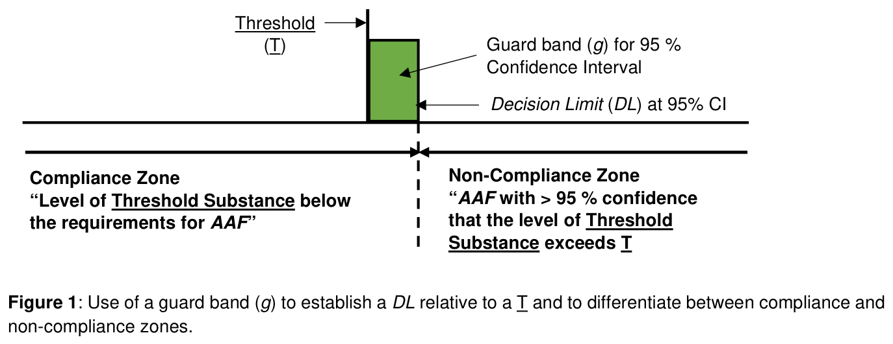
Figure 1: Use of a guard band (g) to establish a DL relative to a T and to differentiate between compliance and non-compliance zones.
The DL value shall be calculated as the sum of the T value and the guard band (g), where g is calculated based on the relevant WADA maximum acceptable value (unit/mL) of the combined standard uncertainty (uc_Max) given in Table 1, using a coverage factor k of 1.645 (95% coverage range, one-tailed normal distribution). The resulting value of the DL is then rounded up to the second significant figure.
- (Eq.1) DDDD=T+gg
- (Eq. 2) gg = kk ⋅ uucc_MMMMMM, with k = 1.645
- (Eq. 3) uucc_MMMMMM = T ⋅ uuccMMMMMM (%)
- (Eq. 4) AAAAAA > DDDD
p. 6
When a value found in a Sample exceeds the T value but is less than or equal to (≤) the DL, the Laboratory shall report this result as a Negative Finding and include a recommendation (e.g., in the opinion section of the Test Report) for the Results Management Authority to consider this result within its future "target and intelligence" test planning. This result shall not constitute an AAF regardless of the value of MU the Laboratory reports for the result.
4.0 Maximum Levels of Measurement Uncertainty
The maximum acceptable relative combined standard uncertainty (uc_Max, %) represents the minimum requirement to be met by a Laboratory for the uncertainty of the measurement, estimated at levels close to the T value, when reporting a result for the determination of a Threshold Substance. The uc_Max (%) values are set such that a Laboratory can reasonably expect to work within them when applying quantitative CPs for the determination of Threshold Substances.
In most cases, the uc_Max (%) is assigned using robust estimates of method Reproducibility (SR) obtained from the combined participant Laboratory results from relevant rounds of the External Quality Assessment Scheme (EQAS). In cases where a new Threshold Substance is introduced into this TD before EQAS performance data are available, alternative approaches will be used to assign the relevant uc_Max (%). In this case the assignment of uc_Max (%) must be reviewed and approved by the WADA Laboratory Expert Group (LabEG). When data obtained from subsequent EQAS rounds becomes available, the uc_Max (%) may be revised to reflect the actual analytical performance of the Laboratories.
The results obtained from the WADA EQAS indicate that these minimum requirements are conservative. When setting the target values, the degrees of freedom associated with the MU data are assumed to be large.
- Laboratories shall estimate the relative combined standard uncertainty (uc, %) for a result at levels close to the T value for each quantitative CP for Threshold Substances;
- The estimated uc (%) shall be not greater than (≤) the uc_Max (%) value given in Table 1.
[Comment: As mentioned above, these uc_Max (%) values are considered to be conservative; therefore, smaller uc (%) values may be reported by Laboratories.]
Various approaches to obtain Fit-for-Purpose estimates of uc (%) associated with the results from a given measurement procedure are given in Annex A.
p. 7
5.0 Adjustment of the DL for the Urine Specific Gravity (SG)
- For any of the Threshold Substances treated in this document, when the SG of the urine Sample (SGSample) is greater than (>) 1.018, an adjusted DL for an individual test result (DLadj) shall be calculated as per Eq. 5 below;
[Comment: The SGSample cut-off value for adjustment of the DL has been set at 1.018 to account for the lower limit of the 95% coverage interval, based on a two-tailed normal distribution, of a reference value of SG at 1.020 for normally hydrated individuals (calculated as 1.020 - UMax_SG)].
- The SG value (SGSample) to be used in applying Eq. 6 for the calculation of SGSample_Max is that measured in the Laboratory.
[Comment: The Laboratory shall measure the SGSample in a single Aliquot during the Initial Testing Procedure (ITP) and the CP, using a method that is included within the Laboratory's ISO/IEC 17025 Scope of Accreditation, as follows:
- ITP: In all Samples, using either a digital refractometer or a densitometer;
- CP: A digital refractometer shall be used in all "A" and "B" Samples. The adjustment of the DL for the SG is not needed for:
- (i) "A" and "B" Sample confirmations for those exogenous Threshold Substances that shall not be quantified if detected in the presence of a prohibited diuretic or other masking agent, and
- (ii) "B" Sample confirmations of exogenous Threshold Substances, since in those cases, in accordance with the ISL[4], "B" Sample results shall only confirm the "A" Sample identification (in compliance with the TD IDCR[5]) for the AAF to be valid.
If the SGSample, as measured by the instrument, reads to ≥ 4 decimal places, the SGSample is the value obtained after rounding the instrumental value and expressing it to three (3) decimal places (e.g., 1.0223 should be expressed as 1.022; 1.0227 as 1.023. When the measured value finishes in 5, it should be expressed to the nearest higher 3-decimal place value, e.g., 1.0225 should be expressed as 1.023).]
- The SG-adjustment to the DL shall be made using the following formula:
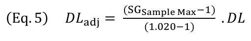
Where SGSample_Max is calculated as:
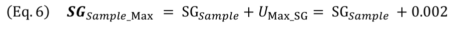
UMax_SG = 0.002 is the maximum allowed expanded uncertainty (U95%, k = 2) for SG.
- The determined DLadj shall be expressed truncated to three (3) significant figures (trailing zeros (0) shall be considered as significant figures, e.g., 1.50; 100) (see Annex B).
p. 8
6.0 Reporting
The minimum requirements for reporting an AAF for a Threshold Substance are:
- The quantitative result (reported as the mean value from triplicate determinations, truncated to three (3) significant figures; trailing zeros (0) shall be considered as significant figures, e.g., 13.0; 190);
- A statement that the quantitative result exceeds (>) the relevant DL (or DLadj, if SG > 1.018); and
- The uc (%) associated with a result at levels close to the T value, as determined during the quantitative CP method validation (which shall not be higher than (≤) the corresponding uc_Max (%) specified in Table 1).
Reporting Example for the Test Report:
The concentration level of 'Prohibited Substance A' in the Sample is X.XX (units). This exceeds the DL (after adjustment for the SG, if applicable) for A of Y (units). The relative combined standard uncertainty (uc %) estimated by the Laboratory for a result at the Threshold Z is 'b' (%). This result constitutes an Adverse Analytical Finding for the presence of A in the Sample.
7.0 Interpretation Examples
7.1 Ephedrine is detected in a Sample with an SG of 1.018 at a concentration level of 11.208 µg/mL using a quantitative Analytical Method where the uc (%) is 3.6% for a result at the T of 10.0 µg/mL.
In accordance with the reporting rules established in this TD (see Article 6.0), this result constitutes an AAF since the concentration level of ephedrine in the Sample, truncated to three (3) significant figures, is 11.2 µg/mL and exceeds the DL for ephedrine of 11.0 µg/mL. The uc (%) of 3.6 % is lower than the corresponding uc_Max (%) of 5.0. Such a finding shall be reported as follows:
Test Report: The concentration level of ephedrine in the Sample is 11.2 µg/mL. This exceeds the DL for ephedrine of 11.0 µg/mL. The relative combined standard uncertainty (uc %) estimated by the Laboratory for a result at the Threshold (10.0 µg/mL) is 3.6%. This constitutes an AAF for the presence of ephedrine in the Sample.
7.2 Carboxy-THC is detected in a Sample with a SG of 1.022 at a concentration level of 216.7 ng/mL using a quantitative Analytical Method where the uc is 9.0 % for a result at the Threshold of 150 ng/mL. The DLadj calculated according to Eq. 5 and expressed to three (3) significant figures is 216 ng/mL (see Annex B).
In accordance with the reporting rules established in this TD (see Article 6.0), this result does not constitute an AAF, since the concentration level of carboxy-THC in the Sample, truncated to three (3) significant figures, is 216 ng/mL and does not exceed the DLadj for carboxy-THC of 216 ng/mL.
p. 9
Since the concentration level of carboxy-THC does not exceed the adjusted DL, the Laboratory shall report this result as a Negative Finding and include a recommendation (e.g., in the opinion section of the Test Report) for the Results Management Authority to consider this result within its Test Distribution Plan.
[Comment: When the result for a Threshold Substance in a Sample scantily exceeds the DL, the confidence interval [mean ± expanded uncertainty U95% (k = 2)] for the Laboratory result may extend below the DL. It is important to note that this shall not invalidate an AAF. For appropriate statistical comparison, the uc with a single-tailed distribution coverage factor (k = 1.645) is taken into consideration when the Laboratory result is compared to the T to demonstrate that the result obtained for the Threshold Substance exceeds the T at greater than (>) 95% confidence.]
p. 10
ANNEX A
1 Estimating Measurement Uncertainty (MU)
The International Vocabulary of Metrology (ISO/IEC Guide 99:2007)[10] formally defines MU as a parameter characterizing the dispersion of quantity values attributed to a measurand.
More simply stated, the combined standard MU of a result [uc(y)] is equivalent to an estimate of the standard deviation (SD) associated with the result (y) that would have been obtained for the sample under analysis if repeated several times. Multiplication of uc(y) by a coverage factor (k) gives the expanded MU (U) associated with result (y). For a given sample, the combination of the result (y) and its associated U specifies a range describing the dispersion of the values that can reasonably be attributed to the measurand at a stated level of statistical confidence. For Doping Control purposes, a value of U corresponding to a 95% coverage range is applied.
Accreditation to ISO/IEC 17025[11], as well as compliance with the ISL[4], requires that Laboratories evaluate the MU associated with their results at levels close to the Threshold, and report the uncertainty where applicable. The ISO/IEC Guide to the Expression of Uncertainty in Measurement (GUM) establishes general rules for evaluating and expressing uncertainty in measurement that are applicable to ISO/IEC 17025 accredited laboratories[12].
The examples cited in the GUM concentrate on one method, referred to elsewhere as the "analytical", "modelling" or "bottom-up" approach, for uncertainty evaluation. The basic GUM principles also allow for more global approaches for estimating the sources of MU, generally referred to as "top-down" or "empirical" approaches, using data derived from intra- or inter-laboratory method validation studies, internal quality control procedures or the results of EQAS. These approaches are all potentially compliant with the GUM principles provided the MU estimate obtained is suitable for the intended purpose of the measurement. Various references are available which give worked examples of both the "bottom-up" and "top-down" approaches to MU estimation [13, 14, 15, 16, 17].
Different approaches may be applied for the estimation of the combined standard measurement uncertainty uc(y) associated with an individual result (y). They use:
A. A modelling approach based on the principles described in the GUM;
B. Intra-laboratory approach: "In-house" method validation data combined with quality control data;
C. Inter-laboratory approach: Data derived from inter-laboratory collaborative trials or from EQAS.
The strategy used for uncertainty estimation does not have to follow one exclusive model and in practice the combination of data obtained from two or more different approaches can be employed.
p. 11
All of these approaches are considered acceptable. Any of these approaches may be employed by a Laboratory to estimate the MU associated with their measurement results, provided the Laboratory estimate does not exceed the maximum acceptable (target) MU associated with the determination of specific Threshold Substances that have been established by WADA. These maximum acceptable MU are conservative estimates derived from EQAS performance data.
A. Modeling Approach
In this case, the Laboratory develops a measurement equation or model in which result (y) is a function of independent input parameters x₁, x₂, x3….xₙ that all influence the measurement result.
If the mathematical model is a combination of addition/subtraction and multiplication/addition operations, then an appropriate quadratic combination is used to calculate the uc(y). This approach is also referred to as the "bottom-up" or "GUM" approach.
The GUM approach is based on the propagation of uncertainties where the estimated standard deviation associated with the measurement result (y) is named uc(y) and is determined from the estimated standard deviations associated with each input estimate (xᵢ). These uncertainty components from the input quantities are then combined to give the combined standard uncertainty uc(y).
When the input quantities are independent, the uc(y) is given as:
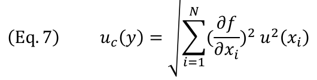
Where f is the function that defines the measurand.
More details on the application of this method and the implications in cases where two or more of the input quantities are correlated can be found in the GUM and elsewhere in the literature[12, 15].
[Comment: The uncertainty budget derived using this approach indicates the relative magnitude of the various sources of uncertainty but carries the risk of missing a contributing factor which may significantly affect the overall estimate of MU. Nonetheless, it is a valuable means of establishing where the major sources of uncertainty are found in a quantitative CP and for identifying where efforts should be focused if a reduction is desired in the overall MU of results obtained through use of the quantitative CP.]
p. 12
B. Intra-Laboratory Data Approach
This approach assumes that the quantitative CP has undergone intra-Laboratory validation including an estimation of the Intermediate Precision (also referred to as the within-Laboratory reproducibility or imprecision). It is based on a three-component measurement model:
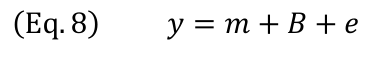
The result (y) is the sum under Intermediate Precision conditions of the measurement method mean (m), an estimate of method bias (B) and a random error contribution (e) and the uc(y) associated with the result is given by:
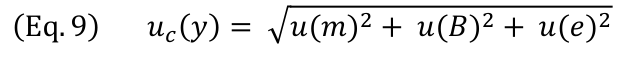
The estimate of within-Laboratory Intermediate Precision of results, usually obtained from intra-Laboratory QC and method validation data, can be expressed as a standard deviation (sw). It provides a Fit-for-Purpose estimate of the uncertainty contribution from the u(m) and u(e) terms and the "internally visible" bias component (BInt).
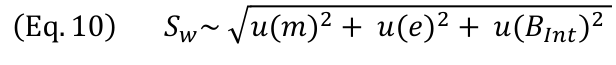
If (y) is the result of a single analysis, the equation for calculating the standard uncertainty associated with the result simplifies to:
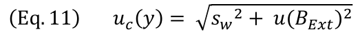
When (y) is the average of n replicate analyses:
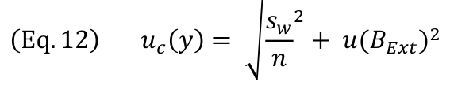
In both cases, BExt is an estimate for bias not accounted for by intra-Laboratory studies and the uncertainty due to bias [ubias or u(Bext)] can be estimated by using the following equations[13]:
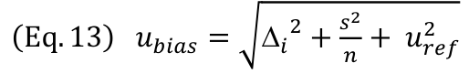
where:
- n - number of replicate measurements of the sample used as reference (CRM, QC or EQAS sample) prepared at a specified dilution level;
- s - standard deviation (SD) under Repeatability conditions of the results obtained for the replicate measurements of the reference sample at a specified dilution level;
uref - uncertainty of the reference sample, and;
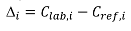
p. 13
Where information is available from nbias separate bias determinations, then the ubias shall be expressed as the root mean square of the bias (RMSbias).
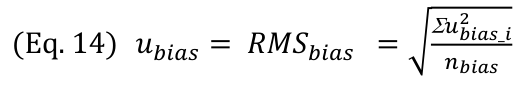
where:
nbias - number of independent bias determinations.
[Comment: When appropriately applied, this approach, as with the other empirical approaches, is as valid as the modeling approach, and should provide a conservative but pragmatic estimation of MU.]
C. Inter-Laboratory Method Performance or EQAS Approach
Where a Laboratory has participated in an inter-Laboratory comparison to evaluate a quantitative CP, or has demonstrated appropriate implementation of a literature method validated using such an approach, the inter-Laboratory Reproducibility of the method (sR), calculated from the results of the comparison and expressed as SD, can be used as an estimate of the uc of an individual result obtained using the method:
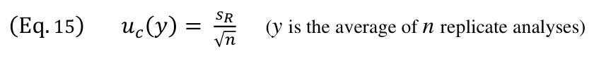
This approach is applicable, in practice, only when the validation study includes a multi-centre, inter-Laboratory trial conducted to a pre-defined experimental protocol.
[Comment: The major sources of variability can be assessed by inter-Laboratory studies and provide estimates of Repeatability standard deviation (sᵣ), Reproducibility (sR) and Bias (B) of the method (with respect to a known reference value). The Reproducibility (sR) can be used as an estimate of the uc associated with an individual measurement result obtained using this quantitative CP Procedure.]
Data obtained from ongoing participation in an EQAS also allows, in some cases, for the calculation of a performance characteristic of the ensemble of methods used by participants that can serve, in the absence of a properly constituted inter-Laboratory study, as a conservative estimate of the Reproducibility (sR) of the quantitative CP used by an individual Laboratory. It is mostly in the latter sense that the term sR is used in the current draft. This estimate is only valid when:
- The values reported by participants in the EQAS round (after exclusion of outliers) fall into a normal Gaussian distribution;
- The intra-Laboratory Repeatability (sᵣ) for the method is smaller than (<) the variation of the participants' results (sᵣ < sR);
- Uncertainty contributions from instability or heterogeneity of the EQAS sample are negligible;
- The matrices utilized correspond closely to those encountered in routine analytical conditions (i.e., "representative" matrices are used to prepare the EQAS materials);
- The target values of the study fall within the range of application of the method;
p. 14
- The Laboratory obtains satisfactory results in a minimum number of consecutive rounds.
In this case the SD of the participants' results after exclusion of outliers or as calculated from robust statistics can be used as an estimate of the uc associated with a result obtained by the method. This value can then be applied as described for the sR estimate above.
[Comment: As noted before, the Reproducibility (sR) estimate can be used as a conservative estimate of the uc associated with a result. Moreover, a Laboratory can, by its participation in the WADA EQAS, verify and demonstrate the validity of its chosen approach to estimate the MU.]
2 Verification of Measurement Uncertainty
Regardless of the approach employed by a Laboratory to estimate the MU for the results it obtains using a particular quantitative CP, it is important that this MU estimate be validated, and its veracity continuously monitored. This can be accomplished by regular comparison with an appropriate QC sample, preferably a Certified Reference Material (CRM), if available, and/or through evaluation of method performance using EQAS data.
The MU for a particular quantitative CP, estimated by a Laboratory can also be checked by comparison to data generated from an appropriate EQAS by employing the Eₙ number.
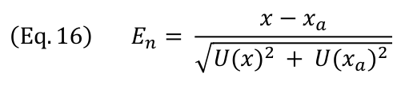
Where xₐ is the assigned value for the EQAS study, x is the Laboratory result, and U(xₐ) and U(x) are respectively the expanded uncertainties associated with each result.
Monitoring the |Eₙ| values over time provides the Laboratory an important tool to evaluate the agreement between its MU estimation for a quantitative procedure and the actual performance of that procedure. Provided that the estimated MU is less than or equal to (≤) the uc_Max required by WADA, it is considered that when |Eₙ| is distributed:
- Around one (1): then the estimated MU is in good agreement with the Laboratory's EQAS performance;
- Repeatedly at levels considerably smaller than (<<) one (1): then the MU could be overestimated. This shows that the historical Laboratory performance in the EQAS compared to the inter-Laboratory consensus values is better than its estimated MU. The Laboratory should evaluate the need for reassessing the MU for this particular quantitative CP;
- Repeatedly greater than (>) one (1): the MU could be underestimated as the Laboratory's performance in the EQAS is worse than its estimated MU. In this case the reason for the high Eₙ value should be re-assessed. If necessary, steps should be taken to re-evaluate the MU.
p. 15
It is important to highlight that individual |Eₙ| values greater or lower than one (1) may not necessarily justify actions to be taken by the Laboratory. Rather, the history of values and their trends should be monitored.
Whenever there is a change in the quantitative CP (extraction step, derivatization conditions, internal standard, etc.) a re-validation of the procedure and a re-assessment of the MU of results obtained using the altered procedure is required. It is necessary to check that the quantitative CP is still Fit-for-Purpose (e.g., the MU estimated by the Laboratory for a particular quantitative CP is below the acceptable uc_Max given in Table 1 above).
p. 16
ANNEX B Adjusted Decision Limits
Table 2. Adjusted DLs calculated for SG > 1.018 as per Eq. 5 and expressed truncated to three (3) significant figures
| SG | SGMax | Salbutamol.1.20 | Formoterol.50.0 | Cathine.6.00 | Ephedrine.11.0 | MethylE.11.0 | PSE.170 | Morphine.1.30 | C-THC.180 |
|---|---|---|---|---|---|---|---|---|---|
| 1.019 | 1.021 | 1.26 | 52.5 | 6.30 | 11.5 | 11.5 | 178 | 1.36 | 189 |
| 1.020 | 1.022 | 1.32 | 55.0 | 6.60 | 12.1 | 12.1 | 187 | 1.43 | 198 |
| 1.021 | 1.023 | 1.38 | 57.5 | 6.90 | 12.6 | 12.6 | 195 | 1.49 | 207 |
| 1.022 | 1.024 | 1.44 | 60.0 | 7.20 | 13.2 | 13.2 | 204 | 1.56 | 216 |
| 1.023 | 1.025 | 1.50 | 62.5 | 7.50 | 13.7 | 13.7 | 212 | 1.62 | 225 |
| 1.024 | 1.026 | 1.56 | 65.0 | 7.80 | 14.3 | 14.3 | 221 | 1.69 | 234 |
| 1.025 | 1.027 | 1.62 | 67.5 | 8.10 | 14.8 | 14.8 | 229 | 1.75 | 243 |
| 1.026 | 1.028 | 1.68 | 70.0 | 8.40 | 15.4 | 15.4 | 238 | 1.82 | 252 |
| 1.027 | 1.029 | 1.74 | 72.5 | 8.70 | 15.9 | 15.9 | 246 | 1.88 | 261 |
| 1.028 | 1.030 | 1.80 | 75.0 | 9.00 | 16.5 | 16.5 | 255 | 1.95 | 270 |
| 1.029 | 1.031 | 1.86 | 77.5 | 9.30 | 17.0 | 17.0 | 263 | 2.01 | 279 |
| 1.030 | 1.032 | 1.92 | 80.0 | 9.60 | 17.6 | 17.6 | 272 | 2.08 | 288 |
| 1.031 | 1.033 | 1.98 | 82.5 | 9.90 | 18.1 | 18.1 | 280 | 2.14 | 297 |
| 1.032 | 1.034 | 2.04 | 85.0 | 10.2 | 18.7 | 18.7 | 289 | 2.21 | 306 |
| 1.033 | 1.035 | 2.10 | 87.5 | 10.5 | 19.2 | 19.2 | 297 | 2.27 | 315 |
| 1.034 | 1.036 | 2.16 | 90.0 | 10.8 | 19.8 | 19.8 | 306 | 2.34 | 324 |
| 1.035 | 1.037 | 2.22 | 92.5 | 11.1 | 20.3 | 20.3 | 314 | 2.40 | 333 |
| 1.036 | 1.038 | 2.28 | 95.0 | 11.4 | 20.9 | 20.9 | 323 | 2.47 | 342 |
| 1.037 | 1.039 | 2.34 | 97.5 | 11.7 | 21.4 | 21.4 | 331 | 2.53 | 351 |
| 1.038 | 1.04 | 2.40 | 100 | 12.0 | 22.0 | 22.0 | 340 | 2.60 | 360 |
| 1.039 | 1.041 | 2.46 | 102 | 12.3 | 22.5 | 22.5 | 348 | 2.66 | 369 |
| 1.040 | 1.042 | 2.52 | 105 | 12.6 | 23.1 | 23.1 | 357 | 2.73 | 378 |
p. 17
8.0 References
[Current versions of WADA ISL, Technical Documents and Laboratory Guidelines may be found at https://www.wada-ama.org/en/what-we-do/science-medical/laboratories ]
[1] WADA Technical Document TD CG/LH: Reporting and Management of Urinary Chorionic Gonadotrophin (hCG) and Luteinizing Hormone (LH) Findings in Male Athletes.
[2] WADA Technical Document TD GH: Human Growth Hormone (hGH) Isoform Differential Immunoassays for Doping Control Analyses.
[3] WADA Laboratory Guidelines on human Growth Hormone Biomarkers Test for Doping Control Analyses.
[4] The World Anti-Doping Code International Standard for Laboratories (ISL).
[5] WADA Technical Document TD IDCR: Minimum Criteria for Chromatographic-Mass Spectrometric Confirmation of the Identity of Analytes for Doping Control Purposes.
[6] WADA Technical Document TD MRPL: Minimum Required Performance Levels and Applicable Minimum Reporting Levels for Non-Threshold Substances Analyzed by Chromatographic-Mass Spectrometric Analytical Methods.
[7] WADA Technical Letter TL05: Oxilofrine.
[8] The World Anti-Doping Code International Standard Prohibited List.
[9] WADA Technical Letter TL22: Ethylmorphine
[10] ISO/IEC Guide 99:2007. International Vocabulary of Metrology - Basic and General Concepts and Associated Terms (VIM) (2007).
https://www.bipm.org/en/publications/guides/[11] ISO/IEC 17025:2017. General Requirements for the competence of testing and calibration laboratories (2017). https://www.iso.org/standard/66912.html
[12] ISO/IEC Guide 98-3:2008. Evaluation of Measurement Data - Guide to the expression of uncertainty in measurement (GUM) (2008). http://www.bipm.org/en/publications/guides/[13] Eurolab Technical Report No. 1/2007. Measurement Uncertainty revisited: Alternative approaches to uncertainty evaluation (2007).
https://www.eurolab.org/pubs-techreports
[14] NORDTEST Technical Report 537. Handbook for calculation of measurement uncertainty in Environmental Laboratories (2012).
https://www.nordtest.info/images/documents/nt-technical-reports/nt_tr_537_ed3_1_English_Handbook%20for%20Calculation%20of%20Measurement%20uncertainty %20in%20environmental%20laboratories.pdf
[15] Ellison, S.L.R., Williams, A. (Eds). EURACHEM/CITAC Guide: Quantifying Uncertainty in Analytical Measurement. 3rd ed. (2012).
https://www.eurachem.org/images/stories/Guides/pdf/QUAM2012_P1.pdf
p. 18
[16] ISO 11352:2012, Water quality - Estimation of measurement uncertainty based on validation and quality control data https://www.iso.org/standard/50399.html
[17] ISO 21748:2017, Guidance for the use of repeatability, reproducibility and trueness estimates in measurement uncertainty evaluation https://www.iso.org/standard/71615.html
Retrieved on 25 November 2026 from https://www.wada-ama.org/sites/default/files/2022-01/td2022dl_v1.0_final_eng_0.pdf